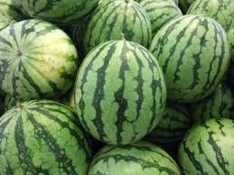
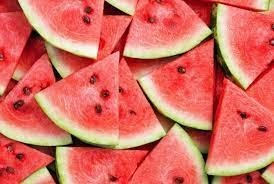

東部
|  |  |
熱量 :
30.4/100g
水果介紹 :
一年生草本葫蘆棵蔓生植物，有卷鬚，夏日開單性花，黃色花冠，雌雄同株。果實為漿果，盛夏為成熟期，形狀為圓形或橢圓形，皮呈深綠色或淡綠色，果肉或紅或黃，子則有黑有白也有赤，水分佔百分之九十四，為夏天最便宜最有水分的水果
營養成分 :
果肉：蛋白質、葡萄糖、蔗糖、果糖、蘋果酸、瓜氨酸、穀氨酸、精氨酸、磷酸、內氨酸、丙酸、乙二醇、甜菜鹼、腺嘌呤、蔗糖、蘿蔔素、胡蘿蔔素、番茄烴、六氫番茄烴、維生素A、維生素B、維生素C、
如何挑選 :
挑選果梗新鮮、果粒碩大、果面平滑、表皮紋路鮮明，輕彈有清脆的聲音、輕拍有振動感